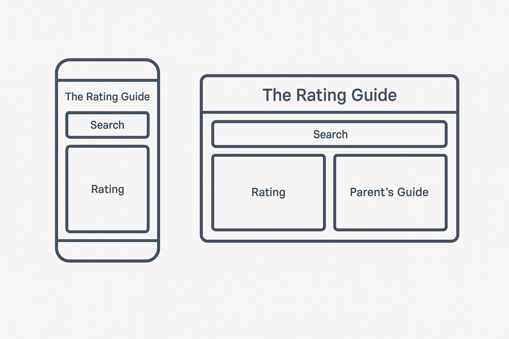

Site Name: The Rating Guide
This name was chosen because it clearly communicates that the site helps users discover movie and TV ratings and content guidelines. It is straightforward, memorable, and search-friendly.
Optional domain availability: theratingguide.org
The site provides an easy way for users to search for movies or TV shows and view their content ratings and parent guides. This helps users—especially parents and educators—make informed viewing decisions.
This site plan document uses the specified color schema for headings, body text, and background.
Below is the wireframe for both mobile and desktop views:
This document is written in valid HTML5 and uses embedded CSS. The structure, color schema, and typography are applied as specified.